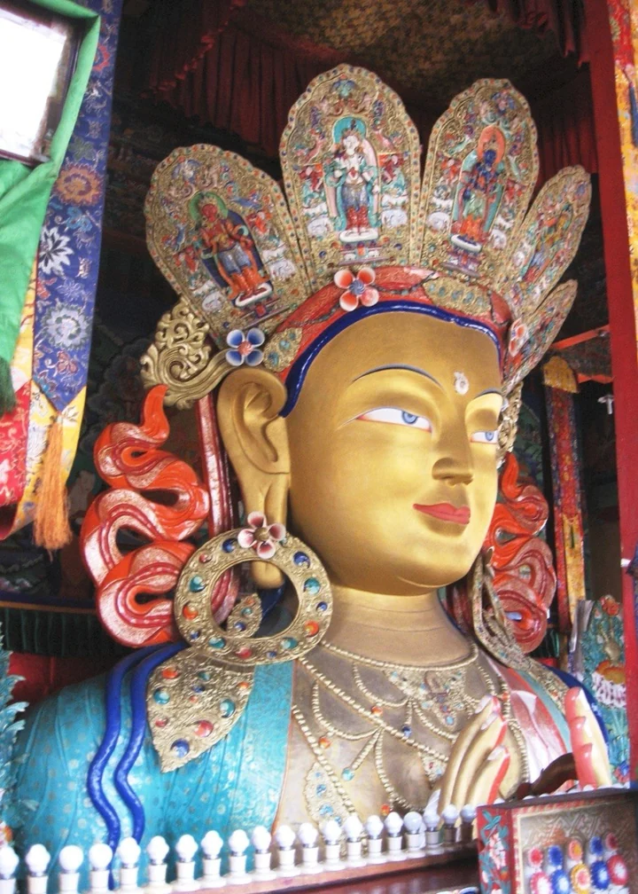
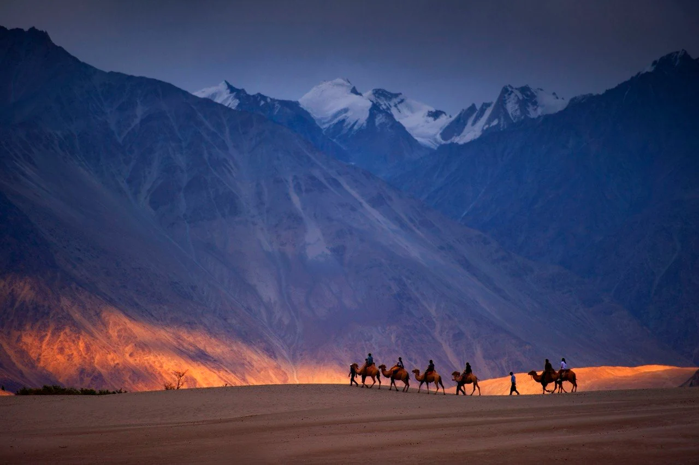
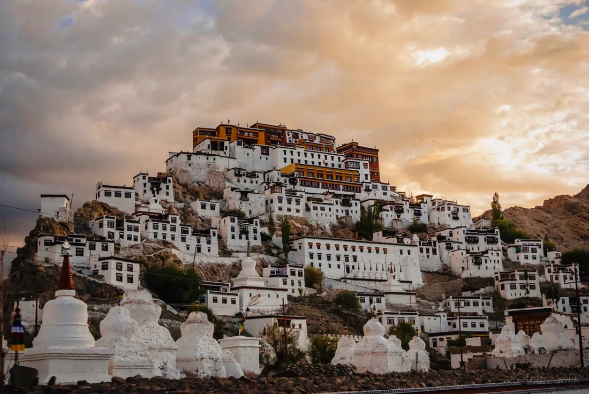
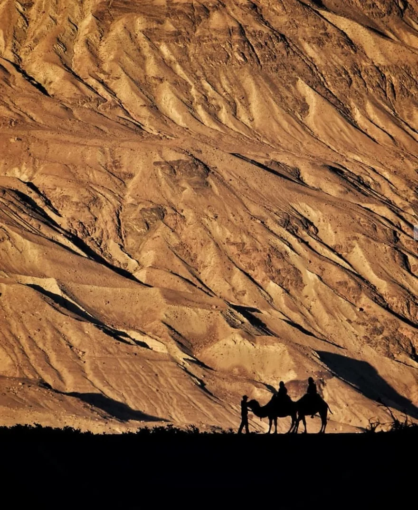
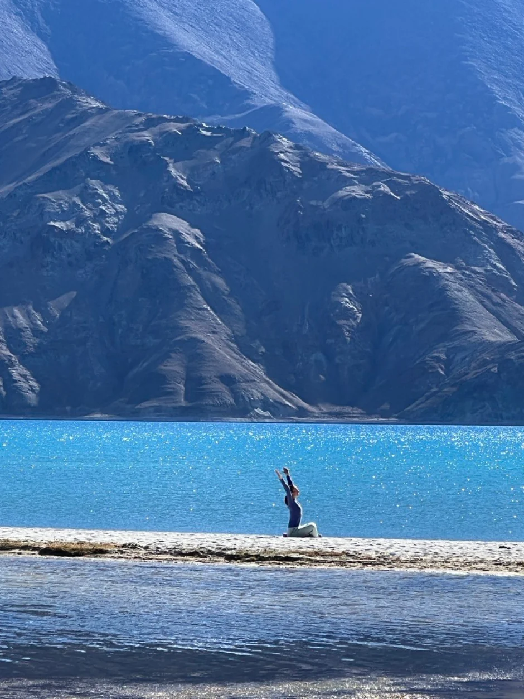
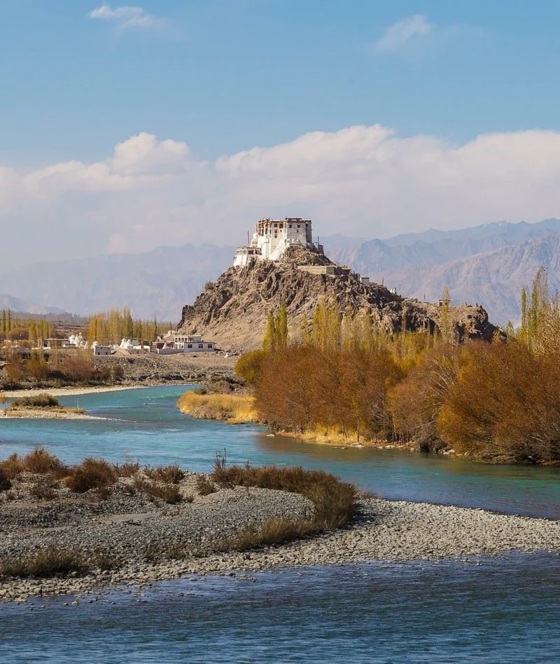
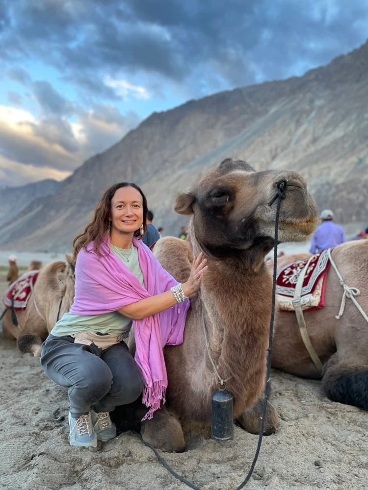
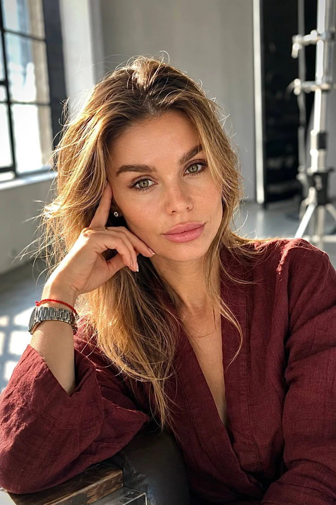

Танцы Цам
В день фестиваля Phyang Tsedup проведём время во дворе монастыря Пхъян, наблюдая за ритуальными танцами монахов в масках.

Путешествие с практикой
Буддийские монастыри, долины и высокогорные озёра.
Йога и медитация с Татьяной Ищенко и Ариной Охлопковой.
Начнём в Лехе, где будет время привыкнуть к высоте. В Пхъяне увидим ритуальные танцы Цам. За перевалом Кхардунг-Ла — дюны Хундера и сады деревни Туртук, где живут балти.
На Пангонге задержимся до утра, чтобы увидеть озеро в разном свете. А в Алчи оставим время на старинные росписи и тихие дворы.
Смотреть программу по дням

В день фестиваля Phyang Tsedup проведём время во дворе монастыря Пхъян, наблюдая за ритуальными танцами монахов в масках.

Дюны Хундера сменятся деревенскими улочками, садами и мостиками Туртука. На долину Шайока посмотрим по дороге.

Вечер у воды и рассвет среди гор. Ночёвку у озера планируем с учётом высоты и самочувствия группы.
Лех, долина Инда, Нубра и Пангонг. В начале даём себе время привыкнуть к высоте. В конце — целый свободный день в Лехе.

Встречаемся в аэропорту, заселяемся и отдыхаем после перелёта. Если самочувствие позволяет, вечером можно ненадолго выйти в город.
Монастырь Спитук с видом на долину Инда. Во второй половине дня — неспешная прогулка по старому городу и рынку по самочувствию.
Едем в монастырь Пхъян на Phyang Tsedup. Проведём время во дворе монастыря, где монахи исполняют ритуальные танцы в масках. Вечером возвращаемся в Лех.
В Тиксе увидим статую Майтреи, в Хемисе заглянем в храмовые залы и дворы. На обратном пути остановимся у дворца Шей.
Через Кхардунг-Ла спускаемся в Нубру. Посетим Дискит и площадку у статуи Майтреи, затем прогуляемся среди дюн Хундера. Первая из двух ночей в Нубре.
Дорога вдоль Шайока, прогулка по узким улочкам и садам Туртука. Вечером возвращаемся в то же место в Нубре.
Переезд через Агам и Шайок, если дорога открыта. Вечер у Пангонга и запланированная ночёвка в районе озера.
Утро у озера, завтрак и дорога в Лех. Основной вариант — через Чанг-Ла. Альтернативу через Кела-Ла рассматриваем с местной командой по состоянию дороги, разрешениям и самочувствию группы.
Храмовые росписи Алчи, крепость Басго и вид на слияние Инда и Занскара. Ночуем в Лехе.
Дворец и улочки старого города. Останется время на кафе или небольшие магазины. К вечеру поднимемся к Шанти-ступе за панорамой города.
Поздний завтрак, любимое кафе, покупки или отдых в отеле. Каждый выбирает свой ритм.
Поездка в аэропорт Леха (IXL) и вылет.
Расписание фестиваля уточним у принимающей стороны. Горные переезды зависят от состояния дорог и разрешений.
Универсальная йога, медитация и мягкие дыхательные практики. Нагрузку будем подбирать с учётом высоты и самочувствия.

Более 12 лет преподаёт Универсальную йогу, медитацию и дыхательные практики. Её личная практика связана с буддийской традицией. Организует путешествия по сакральным местам.

Режиссёр кино и телевидения, преподаватель йоги и медитации. Преподаёт Универсальную йогу в системе Андрея Лаппы. Более 10 лет исследует внимание через движение, дыхание, медитацию и язык кино.
Окончила Санкт-Петербургский университет кино и телевидения, училась в Великобритании и Германии. Живёт и работает в Швейцарии.
Ладакх · 29 июля — 9 августа 2027
$1 900 $2 500
Цены указаны за человека.
Следующие места — $2 200.
Предоплата за место — $1 000.
Одноместное размещение — доплата $500 за поездку.
Уточним наличие мест и ответим на вопросы о поездке.
Встречаемся 29 июля в аэропорту Леха (IXL). Обратный вылет — 9 августа. Перед покупкой билетов напишите нам, чтобы согласовать перелёт и трансфер.
В день прилёта отдыхаем. На второй день запланирован Спитук рядом с Лехом и спокойная прогулка по самочувствию. Через высокие перевалы едем позже, после четырёх ночей в Лехе.
Напишите организатору в Telegram. Уточним наличие мест и условия, затем пришлём реквизиты для предоплаты в размере $1 000.